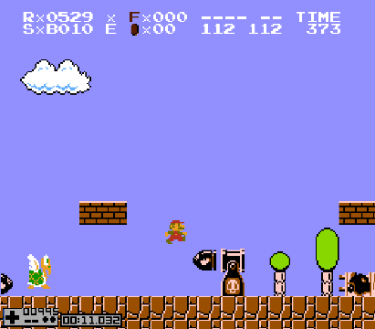

List of BBG setups
See also: List of TAS 8-2 setups
522
Bop nothing, although blant needs to be fast.
523
Bop nothing, although blant needs to be fast.
524
525
526
527
Note: 527 is a bad framerule for BBG.
528
Note: This setup does not need the bop before blant.
This framerule also works with only 539 setup, but you have to do the BBG perfectly to get the framerule.
529

530
531
Note: This setup may be inconsistent.
532
533
534
535
536
537
538
Note: Requires fast blant.
Note: May be inconsistent.
539
The most standard BBG setup:
540
Tip: For this setup you can also bop only the first koopa after blant for a much easier jump past the cannon.
541
Note: There is a small range of blants that don't get a shot.
Newer setup:
542
No bop setup:
Note: Doubles as a TAS 8-2 and regular BBG setup.
543
544
545
546
547
Note: You don't get that upper bill unless if your blant was really fast.
548
Note: No bop but requires fast blant.
549
550
Note: Also works for 551 and 552
551
Note: Also works for 550 and 552
552
Note: Also works for 550 and 551
553
554
Note: Same bops as 539.